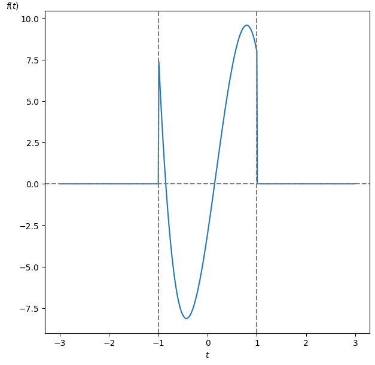
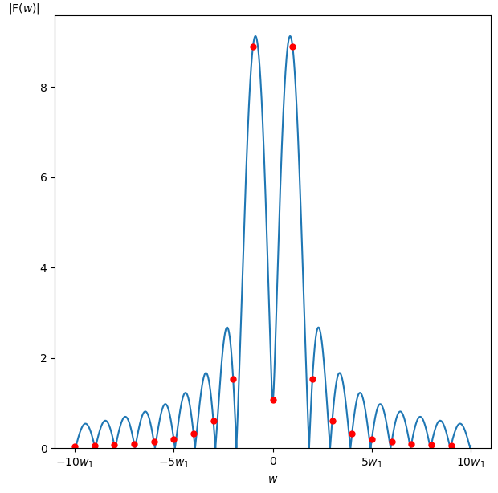
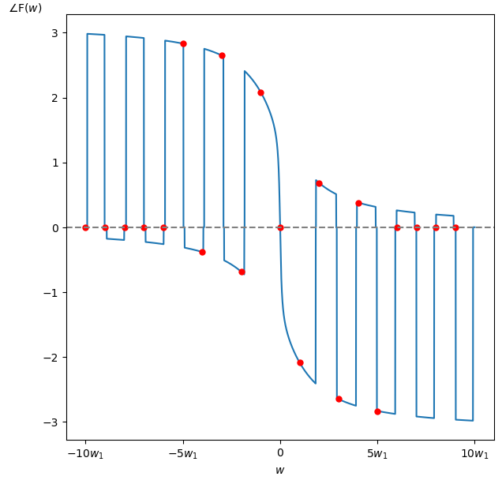
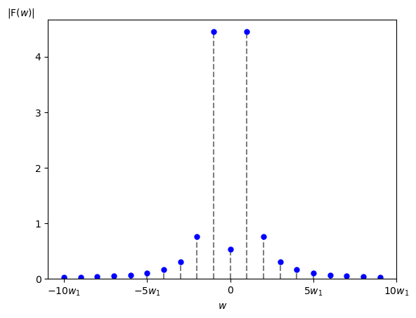
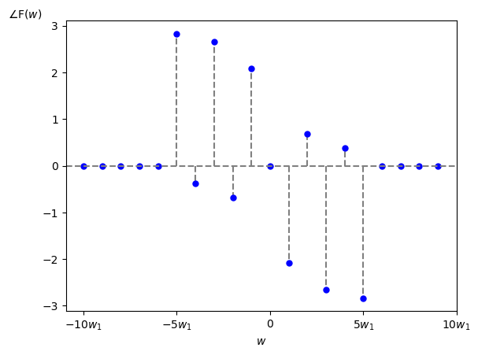

では具体例を示して視覚的にスペクトルを見てみましょう。
まず今回は周期性時間領域アナログ信号として
\[ f(t) = \begin{cases} 0 & \ ( t \lt 0 ) \\[10pt] t^4 -20 \cdot t^3 + 10 \cdot t^2 + 20 \cdot t -3 & (-1 \leq t \leq 1 ) \\[10pt] 0 & \ ( t \gt 0 ) \\ \end{cases} \]
を考えます(図1)。
ちなみにこれは複素フーリエ級数のスペクトル例で取り上げた周期的な信号から1周期分だけ取り出した信号となっていますので、複素フーリエ級数のスペクトルと対比しながら説明していきたいと思います。

この $f(t)$ から求めた振幅・位相スペクトルは以下の様になります。
今回はグラフの横軸を角周波数 $w$ [rad/秒] としていますが、横軸を周波数 $f$ [Hz] にしたり波長 [m] にする場合も実際には多いです。
またグラフの横軸の $w_1$ はこの $f(t)$ を周期 $\textrm{T}$ [秒]の周期的な信号とみなした時の基本角周波数 $w_1 = 2\pi/\textrm{T}$ [rad/秒] です。
さらに赤点は $w_1$ [rad/秒]おきにサンプリングした点です。


参考までに、上のグラフを描画したプログラムはこちらです。
さて複素フーリエ級数のスペクトル例で示したスペクトルを図4と5に再掲しますので、上のスペクトルと見比べて下さい。
確かに $f(t)$ を周期化すると振幅及び位相スペクトルがサンプリングされてディジタル化していることが分かります。
ただし振幅スペクトルに関しては、こちらに書いたように周期 $\textrm{T}=2$ の分だけ掛けたり割ったりしてスケールが変わりますので注意してください。

